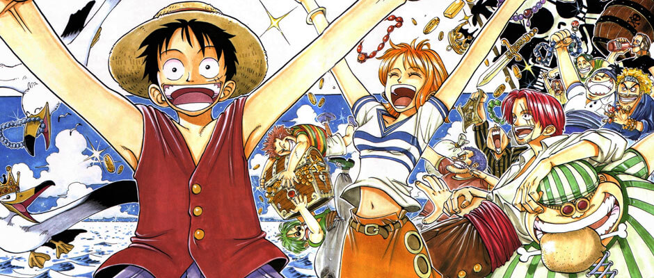

- problematicas sociales
- critica politica
- Esclavitud y opresion.
- libertad y ambicion.
- la desigualdad de oportunidades y el racismo.
- El compañerismo y la amistad
- La búsqueda de una identidad y un propósito propio.
- Pero sobre todo la esperanza y la busqueda de un sueño.
*Y estos son solamente algunos de los temas que se pueden encontrar dentro de la obra.
*A medida que avanza la historia, "One Piece" comienza a presentar situaciones cada vez más complejas, donde el mundo no está dividido simplemente entre buenos y malos. Se pueden observar gobiernos corruptos, sistemas que favorecen a determinados grupos mientras perjudican a otros, personas que nacen en condiciones completamente diferentes y personajes que deben enfrentarse a las consecuencias de decisiones tomadas mucho antes de su nacimiento.
También se abordan cuestiones relacionadas con la discriminación y el racismo, mostrando cómo los prejuicios pueden transmitirse de generación en generación y cómo estos terminan afectando tanto a quienes son discriminados como a quienes los rodean. De la misma manera, la esclavitud y la opresión aparecen como elementos importantes dentro de diferentes momentos de la historia, mostrando las consecuencias que tiene quitarle a una persona su libertad y tratarla como si tuviera menos valor que los demás.

La libertad es, quizás, uno de los conceptos que más se repiten a lo largo de la historia. Los personajes tienen diferentes formas de entender qué significa ser libre y qué están dispuestos a hacer para conseguirlo. Para algunos, la libertad significa viajar por el mundo; para otros, poder vivir sin miedo, decidir su propio futuro o simplemente tener la posibilidad de ser quienes realmente son.
Y es justamente ahí donde creo que "One Piece" logra diferenciarse de una simple historia de aventuras.
Los personajes no son importantes únicamente por sus habilidades o por las peleas en las que participan. Cada uno posee una historia, sueños, miedos y experiencias que explican quiénes son. A medida que el lector acompaña sus viajes, también puede ver cómo estos personajes cambian, maduran y aprenden de las experiencias que atraviesan.
*No solo es una historia de piratas. tambien fue un compañero y un viaje de autodescubrimiento donde el lector crecio junto a los personajes con el pasar de los años. Por ello mismo y a pesar de sus actuales 1178 episodios no creo que sean suficientes para hacerle justicia.
Si tienen la oportunidad, denle una oportunidad a "One Piece". Quizás comiencen buscando una historia de piratas y terminen encontrando mucho más de lo que esperaban.
Y quién sabe... quizás ustedes también terminen formando parte de este viaje.
 ">
">